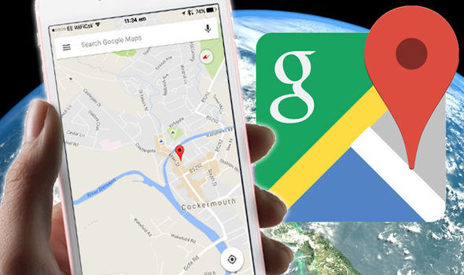
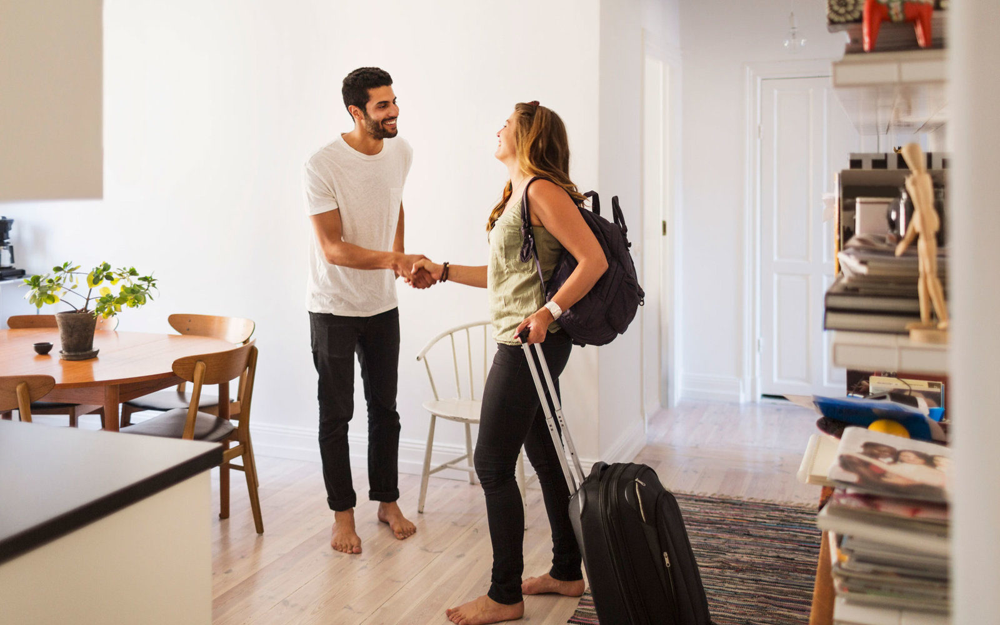

Travel Tips from a Guy Who has Made Every Mistake Imaginable
There are a million "pro-tips" articles about traveling available online. Since I'm sure all you avid blog-readers are expert travelers, I want to offer a few pieces of advice that should be common sense, but might slip between the cracks of your other travel tips. I personally have made every one of these mistakes before, so I want to see you being better than I was!
Double-Check ALL Date and Time Information
Download Google Maps of the Area you're Traveling to in Advance

Don't Forget Sunscreen!
Consider Renting out your Place

Have Fun!
This certainly seems like a no-brainer, but that's exactly why it deserves to be reinforced! There is no worse feeling in the world than arriving at the airport to find out that your plane to Japan departed at 2am, not 2pm as you were expecting, or to see that you accidentally booked your hotel room for July instead of June.
To make your scheduling more efficient, make sure to double check all dates and times as soon as you make the booking, and add them to your digital calendar, if you aren't using a service which does that already. Try making a habit out of this, and avoid ever having to make that dreaded phone call telling your friends and family why you won't make the wedding in time!
The reality is, we live in a world now that is so accessible, no matter what your circumstances are. Even if you're not planning to get a SIM card to use in the country you're traveling to, or if your phone is locked, you will still be able to get by using WiFi in most areas. However, there are times that you won't want to use your mobile data abroad, or you won't even be able to access it.
In those circumstances, you'll be extremely grateful if you managed to download a digital map of the area on Google Maps in advance. This will help you identify landmarks, find important places (like your hotel!), and help you get oriented in your city more easily. Check this link for more information on how to do that!
The average American spends very little time outside, and is thus exposed to the sun only under very deliberate circumstances, such as going to the beach or a day at the pool. Walking is a major part of traveling, and if you use a step counter, you're likely to find that the steps you take while abroad are significantly higher than those which you're used to. An application of sunscreen in the morning will keep you feeling fresh. Take it from me, the only thing worse than a six hour flight is a six hour flight with sunburns running across your body!
When I say I'm a low-budget traveler, I mean, I'm really a low-budget traveler. For better or worse, I'm always trying to stetch my dollar as far as it'll go.
While living in Shanghai, one tip that I found to be effective was listing my own apartment on AirBmB for the duration of my trip. Some people might find this very unappealing for obvious reasons. For me, I was able to completely negate all housing expenses and make a little extra on the side during a trip to the Philippines in 2016. Just make sure to be upfront to potential guests that this is your current living quarters, and don't leave anything of high value in your home, if possible.
I mean, it is always the number one rule, right?
Look, this can be easy to forget. Many people choose to avoid traveling, because they associate it with all of the negative things. The stress induced when something goes wrong, the high cost, long plane rides- it never ends! Sometimes traveling can seem like more trouble than it's worth. However, travel, like all things in life, are about mindset. If you go into it worrying about things outside of your control going wrong, you're going to make yourself miserable. If you can change your attitude to learn to laugh at the absurdity of things not going as planned, and stay adaptive, you're going to learn a valuable lesson that you could take with you anywhere you go in life.
So, that's all I've got for you! Simple stuff, but hopefully some of which can be a worthwhile reminder for you.
Stay tuned for more entires from my personal blog, still to come!